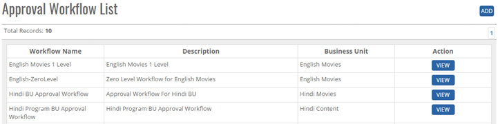
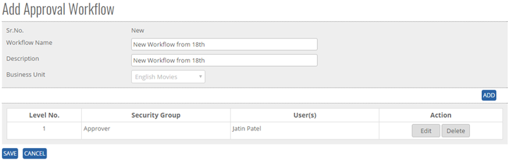


	<section>
		<article>

			<h2>Approval workflow<span></span></h2>
			<div>
				<p></p>

				<p>This module is used to create workflows for Acquisition and Syndication Deal approval depending on the Business Unit. Once user clicks on Approval workflow screen, they are presented with following screen:</p>

				<div class="triangle-border top">				
					
				</div>

				<p>To Add new Approval Workflow, click on <b>Add</b> button.</p>

				<p>Once user has clicked on Add, they are presented with the following screen:</p>

				<div class="triangle-border top">				
					
				</div>

				<p><b>Sr. No.</b> - At the time of creation, it will be shown as <b>New</b>. Once an approval workflow is saved, a unique number will be generated and user can see it while Edit.</p>

				<p><b>Workflow name</b> - User can enter relevant name of the workflow. It is a mandatory field.</p>

				<p><b>Description</b> - A short description of workflow to understand it better can be added in Description field.</p>

				<p><b>Business Unit</b> - User can select relevant Business Unit for which workflow is being created.</p>

				<p>To add users in the approval workflow, click on <b>Add</b> button as shown in screenshot. Once clicked on it, it will open a new line item for adding users in workflow.</p>

				<p>Here user can select Security Group of approvers. Based on Business Unit and Security Group of users, name of users will be populated.</p>

				<p>Click on <b>Save</b> button to save the users and <b>Cancel</b> button to cancel adding users in workflow.</p>

				<p>Finally, click on <b>Save</b> button to save the workflow and <b>Cancel</b> button to cancel saving workflow.</p>

				<p>Once a workflow is saved, it will be shown like this on Approval workflow list page with Edit and View button. Click on Edit button to make changes in workflow and <b>View</b> button to view the workflow.</p>
				<p><b>Note:</b> If the create workflow is not assigned to Acquisition or Syndication Deal then only Edit button will be visible.</p>
			</div>
		</article>
	</section>